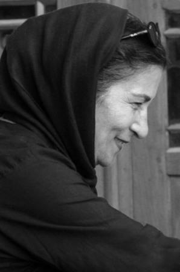

|
|

مهوش شیخ الاسلامی سینماگر و محقق:
این زنان خود قانون اند
گفتگو: نسیم خسروی
جمعه26 مهر 1387
مهوش شیخ الاسلام ، فارغ التحصیل مدرسه ی فیلم لندن است . او از سینماگران موفق ایرانیست که علاوه بر کارگردانی فیلمها ی کوتاه و مستند ، تدریس در دانشکده ی صدا و سیما ، تحقیق ، مدیریت برنامه و تولید ، همچنین داوری فیلم جشنواره های متعدد داخلی و خارجی را بر عهده دارد .
مهوش شیخ الاسلام مدیریت برنامه و تولید سریالهایی ماندد دایی جان ناپلئون ، هزار دستان ، سر به داران و کوچک جنگلی ، همچنین تحقیق و کارگردانی فیلمهای ، سپید جامگان ، دست ها ،یوفک ، چارشو ، پرسنگ دوز ، برگ سبز ، پیر حرا ، قاتل یا مقتول ، ماده ی 61 و به کجا تعلق دارم را در کارنامه ی خود دارد . که تا به حال ، تقدیر و تحسین و جوایز متعدد داخلی و خارجی را برایش به همراه آورده اند.
حساسیت اجتماعی از ویژگی های منحصر به فرد آثار اوست .او در سه فیلم آخرش قاتل یا مقتول، ماده ی 61 و به کجا تعلق دارم ، به درگیری زنان با قانون ، علت ها و تاثیر آن می پردازد .در دو فیلم اول به سمت نوعی ریشه یابی جرم حرکت کرده است و فیلم آخر درباره ی زنانی ست که به خاطر ازدواج با مردان افغان و نداشتن تابعیت ایرانی فرزندانشان مجبور به ترک وطن و مهاجرت به افغانستان می شوند .
مهوش شیخ الاسلام از اولین حامیان کمپین یک میلیون امضاست .با او به خاطر قانون و زنان زندانی فیلمهایش همراه می شویم.

♀ خانم شیخ الاسلام، شما ماده 61 را ساختید و در آخرین فیلمتان ، (به کجا تعلق دارم ) هم به مشکل تابعیت فرزندان زنان ایرانی که با مردان افغان ازدواج کرده اند پرداخته اید. درواقع در ساخت فیلم با موضوع زنان، شما بر نقش قانون تأکید می کنید. چرا به عقیده شما، قوانین نادرست یا اجرای نادرست قوانین، مهمترین معضل زنان ایرانی است؟
قانون در مواردی نادرست است ودر آن قسمتی که قانون هم هست درست اجرا نمی شود.
برای مثال در فیلم ماده 61 همانطور که در اول فیلم استناد به ماده 61 قانونی می کند ، متاسفانه در مورد 4 زن فیلم که مجبور به دفاع از ناموس هستند، قانون نادیده گرفته شده است. در فیلم حرفهای زنان را می شنویم، وکلا هم قانون را توجیح می کنندو بیننده متوجه اشکال قانون می شود.
وقتی به سراغ زنان در زندان رفتم و از آنان در مورد زندگی خانوادگی، ازدواج ، شوهر و فرزندانشان پرسیدم، باور کنید که زندگییشان به یک داستان ساختگی بیشتر شباهت داشت تا حقیقت زندگی ... ولی اتفاق افتاده بود. کتاب قانون کاری به این سرگذشت ندارد، قاضی می خواهد بداند هنگام وقوع جرم کارد در کدام دست قرار داشته و چگونه مقتول از پای در آمده است.
♀ گزارشات غیر رسمی بر وجود رابطه بین سن ازدواج و ارتکاب به جرم در زنان تاکید می کنند در رفت و برگشت هایتان به بند زنان زندان اوین ، برای ساختن فیلمهایتان ، ماده ی 61 و قاتل یا مقتول ، ایا شما چنین رابطه ای دیدید؟
بله .به عنوان نمونه دختري در دوازده سالگي با مردي كه جاي پدرش بوده ازدواج مي كند. پدر به دلايل فرهنگي و اقتصادي و هر دليل ديگري دختر را شوهر داده است . خب اين دختر از ازدواج چه مي فهميده؟ بعضي از اين زنان مي گفتند ما با بچه هاي همسن خود به بازي سرگرم مي شديم و متوجه ي چيزي ديگري نبوديم تا وقت ناهار كه شوهرمان مي آمد و كتكمان مي زد كه چرا ناهار درست نكرده اي؟
♀ چرا بايد دختر 12 ساله ازدواج كند؟ قانون ما هم ميگويد 13 سال سن مناسبي براي ازدواج دختران است. دختري در اين سن بايد به مدرسه برود.
خب مي بينيم كه قانون اينجا هم درست اجرا نمي شود چون قانون اساسي بر حق تحصيل تمام كودكان تاكيد دارد. و از طرف ديگر دختري كه سن 16 يا هفده سال رسيده است تازه مي خواهد پيرامونش را بفهمد و به ناگاه متوجه مي شود كه چند كودك قد و نيم قد دورش را گرفته اند.
♀ بنابراین به عقیده ی شما ، جدا از دلایل دیگر ارتکاب به جرم چقدر می توان نقش تبعیض های قانونی علیه زنان را با اقدام خشنی مثل قتل از طرف زنان مرتبط دانست؟
من با اين زنان كه صحبت كرده ام واقعيت دردناكي را روايت مي كردند. مي گفتند مرد تفريحش اين بوده كه به خانه بيايد و زن را تا حد مرگ كتك بزند. درمقابل جايي نبوده است كه اين زنان را پناه دهد. نه امكان شكايت داشتند . نه خانه ي امني بوده است كه نجاتشان دهد . درب خانه ي پدر هم كه بر رويشان بسته شده است وقتی براي طلاق اقدام مي كنند قانون به زن اجازه طلاق نمي دهد. آنقدر بايد به دادگستري بروند و بيايند كه اگر حالا مرد اعتياد شديد داشت و توانست ثابت کند شاید قانون بگويد خب ، مي تواند طلاق بگيرد. اما اين روند بسيار طولاني است. وقتي آستانه ي تحملش به انتها مي رسد مي گويد من كه دارم مي ميرم يعني اين زندگي دارد مرا مي كشد پس من هم می كشم . يعني اين زنان مي گفتند: ديديم قانون به ما اهميتي نمي دهد، قانون را خودمان اجرا كرديم. اگر قانوني بود كه به داد اين زنان مي رسيد كارشان به اينجا نمي کشید كه حالا زير قصاص باشند.
اينجاست كه نقش قانون اهميت پيدا مي كند. اين سرنوشت زني است كه از كودكي زير سلطه ي مردانه بوده است. قصد ندارم تفكيك كنم چون آن مرد هم در همين مملكت زندگي مي كند و زير چتر همين قانون است. از ضعف قانون همه ما صدمه مي خوريم. اما در همين قانون به مرد بهاي بيشتري داده شده است و دستش باز گذاشته شده است بنابراين لطمه اي كه يك زن از قانون مي خورد بسيار بيشتر است.
دختر 18 ساله ي نازنيني در زندان بود كه به زور شوهرش داده بودند. پدرش او را به قاچاق مواد مخدر كشانده بود. اين دختر ازهمسرش متنفر بود با اين وجود مي گفت اگر شوهرم خوب رفتار مي كرد هيچوقت كارم به كشتنش نمي كشيد. اما ميگفت مرد او را با كابل كتك مي زده است. شكنجه اش ميداده و.. خب كارش به همينجا كشيده بود! مي گفت مرد در را به رويش قفل مي كرد و شب ساعت 11 به خانه مي آمده و در اين مدت زن حتی امکان رفتن به دستشویی هم نداشته است چون دستشويي در حياط بوده.
اگر قانونی بود و به زندگی یک انسان اهمیت میداد او برای نجات و رهایی از این شرایط ویا انتقام دست به چنین کاری نمیزد.
نکته ی جالب اینست که معمولا استدلال می شود که این رفتار مردان دلایل ناموسی دارد و نه روان پریشی و نه خودخواهی ، یعنی همان مردی که حق داشتن چند همسر عقدی را دارد ، حق ناموس کشی و زندانی کردن ناموسش را هم به او داده اند !
بله. مسائل ناموسي هميشه بزرگترين لطمات را به زنان زده است. مرد هزار و يك كار مي كند، بيرون مي رود دوست هاي خودش را دارد مي تواند همزمان 4 زن عقدي و هر چند تا دلش بخواهد زن صيغه اي بگيرد . در چنين فضاي محدود و بسته اي زن تازه شب بايد كتك بخورد و با همان مرد همبستر شود. تكليف بچه اي كه حاصل اين همبستري است چه مي شود؟ كودكي كه از تنفر به وجود آمده است چه اینده ایی خواهد داشت؟. اين بدترين قسمت داستان است. مي شود در باره اش ساعت ها حرف زد يا كتاب نوشت يا فيلم ساخت شايد .
يكي از اين خانم ها مي گفت : شوهرم با خودش زنهای غريبه را به خانه مي آورد و جلوي من و پسر بچه ام با آنها عشقبازي مي كرد. اين درد را چطور مي شود بيان كرد؟ حالا تصور كنيد اگر مردي تا حتی به نا حق به زنش شک کند ؟ غير از اين است كه در جا مي كشدش و خیلی متمدن باشد او را یک شبه سه طلاقه میکند.؟ مطمئنم زنان بسياري در شرق از اين بابت رنج مي برند. . بگذريم كه زمانه اندكي تغيير كرده است اما هنوز اين قضايا بسيار ديده مي شود. اين تاريخ را يك روزه نمي توان درست كرد . شاید نسلهاي آينده درك بهتري از اين مسائل داشته باشد. من سنت را هم بد نمي دانم خيلي هم پاي بند به اخلاق هستم اما بعضي چيزها را نمي توانم تحمل کنم . ا
♀ با توجه به این معضل جدی، در شرایط کنونی نظر شما درباره لایحه حمایت از خانواده چیست؟؟
نمي دانم چه مي شود گفت:، خب اين يعني قانوني كردن همين داستانها ! بعضي چيزها حرمتي داشت و شرم مي كردند و پنهاني كار مي كردند. حالا ديگر عريان و آشكار و قانوني كار مي كنند. دستشان درد نكند!!!!!!!
♀در چنین شرایطی ، با توجه به معضلات زندگی زنان و و ویژگیهای خاص اجتماعی کشورمان ، به عقیده ی شما، قانون در حفاظت و ارتقای سطح کیفی زندگی زنان نقش موثرتر ی دارد یا فرهنگ؟ درباره ارتباط این دو چه نظری دارید؟
من فکر می کنم قانون سریعتر کارش را می کند، فرهنگ باید در جوار آن باشد. فرهنگ سازی بستری می خواهد که باید روی آن کار شود .
♀بنابراین ، نظرتان درباره ی نقش قانون در ساخت فرهنگ چیست؟ و آیا اساسا به چنین رابطه ای معتقدید ؟
بله کاملا ، ببینید مثلا برای ازدواج قانونی گذاشتند که دختر قبل از ازدواج کردن شرایطش را بنویسد.این هم دری ست که باز شده و خیلی خوب است. خانواده هایی که فرهنگی هستند و شرایط را می توانند بفهمند این را اجرا می کنند. این یک قانون مثبت است، قانونی که متمدنانه است. فرهنگسازی وقت می خواهد. من فکر می کنم بچه ها را باید از سنین پائین تربیت کنند، از مدرسه و از خود خانواده. اصلا باید به مردهامان گفته شود که زن هم ، مثل تو انسان است . خود زن ها هم می توانند خیلی موثر باشند مثلا زنی پسرش را طوری تربیت کند که با دختر فرقی ندارد. باید به زن ها و مردها آموزش بدهیم که هر دو انسانیم. ولی خیلی طول می کشد.من خیلی خیلی ایرانی هستم، عاشق مملکتم هم هستم، این مردم را هم خیلی خیلی دوست دارم شاید این را از فیلم هایم بفهمید. اصلا دلیل اینکه ما اینجا ماندیم و دوست داریم اینجا کار کنیم همین است. مگر حرف ما چیست؟ ما میگویم عدالت اجتمایی.
زمانی زنهایمان همیشه در خانه بودند. مرد نان آور بود. حالا دیگر با این شرایط زندگی، هر دو نان آور هستند. مشکلات مردها هم بیرون کم نیست، مشکلاتشان باید با هم تقسیم بشود.
♀با توجه به اینکه نان آوری دیگر درانحصار مرد نیست ...
"بابا نان داد" نیستیم دیگر!
♀پیش از، این تصور عمومی ،جنبش زنان ایران را حرکتی نشات گرفته از خواسته ی زنان طبقه ی بالای جامعه قلمداد کرده است که خواسته ها و نیازهای عموم زنان در آن جایی ندارد. به نظر شما کمپین یک میلیون امضاء با در نظر گرفتن کف مطالبات زنان ایرانی و تاکید بر نقش تمام زنان ایران در تغییر ، چقدر در کم کردن این فاصله موثر بوده است؟
مطمئناخیلی زیاد .اگر در اجتماع،در خانواده ها بروند و با زنهایی که مشکل دارند صحبت کندبسیار موثر است . من توی زندان این را فهمیدم. همان زنهایی که در زندان بودند خیلی اگاه تر شده اند به دلیل اینکه باید از خود دفاع کنند.پس کنجکاوانه به دنبال قانون و راه حل میگشتند. به اینکه حقوقشان اینطور پایمال شده است.این زنان با اینکه باید انگشت میزدند و سواد خواندن نداشتند ، به ظلمی که در حقشان شده بود کاملا اگاه شده بودند. ، اگر کمپین یک نقشش اگاهی دادن به زنها باشد نقش موثری در کم کردن این فاصله خواهد داشت، مطمئنا واقف تر می شودند واصلا جذب این جریان خواهند شد.
♀خانم شیخ الاسلام چیزی که می پرسم شاید دغدغه ی بسیاری از هنرمندان ما در همراه شدن مستقیم و یا درگیر نشدن با کنش های جمعی باشد ، با توجه به تاثیر متقابل هنر و رویدادهای اجتماعی و با توجه به نقش آگاهی های فردی در توسعه ی فرهنگ ، به عقیده ی شما برای مثال ، ساخت یک فیلم (یا تولید هر اثر هنری دیگری )به طور فردی ، در ساخت، تغییر و ارتقاء فرهنگ جامعه موثرتر است یا تقسیم انرژی و همراه شدن در یک کنش جمعی مانند کمپین یک میلیون امضاء؟
خب، من نمی توانم این ها را تفکیک کنم، به نظر من اینا به موازات هم پیش میروند کار هنری ممکن است باعث یک حرکت . اگاهی و یک جریان باشد. من نمی توانم تفکیک کنم. به نظر هر دو لازم و ملزوم هم هستند.
♀با این وجود ، بسیاری از هنرمندان ما به دلایل مختلف از فعالیت اجتماعی ، حتی در حد واکنش به رویدادها ، دوری می کنند به عقیده ی شما، دلیل این مسئله چیست؟
خب، یک دلیل آزادی افراد است، من به آزادی خیلی اهمیت می دهم و احترام می گذارم، یکی دغدغه اش این است. یکی هم دوست دارد کار صرفا هنری بکند. کارش صد در صد هنری ست و نمی خواهد اجتماعی کار کند، چیز دیگری هم هست، بعضی ها دلشان نمی خواهد خودشان را درگیر کنند.
♀درگیری به معنای هزینه دادن؟
بله، واقعا هست ، خب، مطمئنا ان آدم صد در صد هنری هم این چیزها را می بیند ، من فکر نمی کنم خودش را بتواند ایزوله کند. ولی خب، شاید توی ان کارش موفق تر است، و شاید هم واقعا دغدغه اش این نیست.
♀ به عقیده من، مشکل قوانین تبعیض آمیز مشکل هم زنان و هم مردان ماست، با این وجود ، به نظر شما ، ممکن است که قانون برای زن هنرمند در شرایط فعلی جامعه دغدغه نباشد؟ بگذارید اینطور بگویم ممکن است ما بر حسب شانس و اتفاق با بخشی از این قوانین درگیر باشیم یا نه، اما ممکن است بگوییم هیچ وقت با هیچ کدام از این موارد قانونی درگیر نخواهیم شد؟
شما درست می گویید. زنی که شوهر دارد می خواهد از ایران برود بیرون، همین هنرمند خیلی معروف باید برود بگوید که تو امضاء کن تا من بتوانم از ایران بیرون بروم.یعنی قانون او را اینقدر عاقل ندانسته باید برود اجازه بگیرد مثل بچه ای که باید از مادرش اجازه بگیرد. این هست اما هنوز هم دوست ندارم کسی را محکوم کنم.
♀خانم شیخ الااسلام ، آیا صحبتی را به عنوان پایان گفتگو در نظر دارید؟
من امیدوارم یک روزی بشود که ما دیگر این بحث های ابتدایی را نکنیم یعنی بتوانیم به بحث های خیلی والاتری برسیم. اگر هم که بخواهند مذهبی فکر کنند به نظرمن ، زن ، مادر در دین اسلام،در هر دینی، در هر اجتماعی خیلی محترم است.و باید به حقوق اجتمایی وفردی او احترام گذاشته شود.
به خاطر زمان و مهربانی که با ما تقسیم کردید، بسیار متشکرم